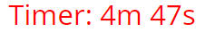

Anleitung

Allgemein
Bei einem Sudoku dürfen die Zahlen 1-9 nur jeweils einmal in jedem Block (3x3 Quadrat), jeder Spalte und jeder Zeile vorkommen.
Das Ziel ist es mit Hilfe der vorgegebenen Zahlen und Logik das Sudoku zu vervollständigen.
Anleitung dieser Seite
Das Sudoku auf dieser Seite wird durch anklicken der nicht ausgegrauten Felder bedient. Hier können die Zahlen zur korrekten Vervollständigung des Sudokus eingegeben werden. Eingaben sind mit der Enter-Taste zu bestätigen.
Bei den Schwierigkeitsstufen "Einfach" und "Mittel" ist zusätzlich ein Eingabecheck implementiert. Dieser färbt das Feld bei einer korrekten Eingabe grau und verhindert wie auf den bereits vorgegebenen Feldern weitere Eingaben.
Beispiel:Ein weiteres Feature dieser Sudoku-App ist der Highscore, dieser wird beim erfolgreichen Lösen des Sudokus erfasst. Um das ganze etwas sportlicher zu machen wird für die Highscoreberechnung ein Time-Limit vorgegeben. Sobald dieses überschritten ist, färbt sich der Timer rot und man verliert Punkte.
Die Time-Limits der jeweiligen Schwierigkeitsstufen sind:
- Einfach: 5 min
- Mittel: 10 min
- Schwer: 20 min